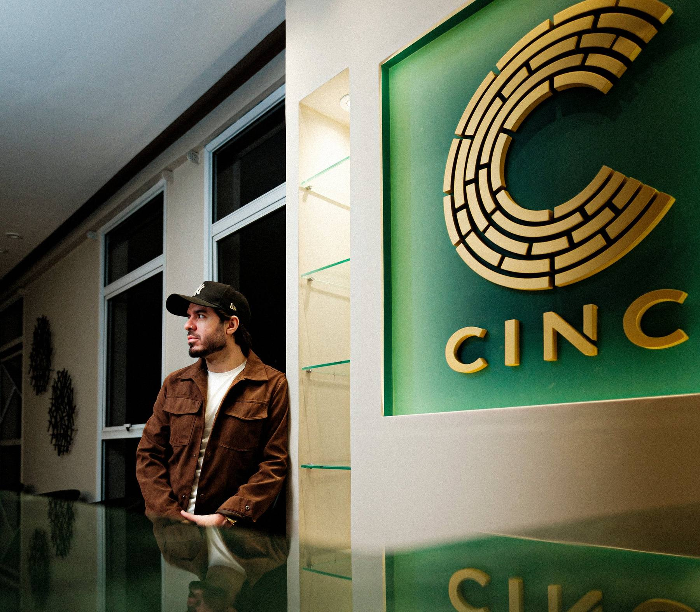
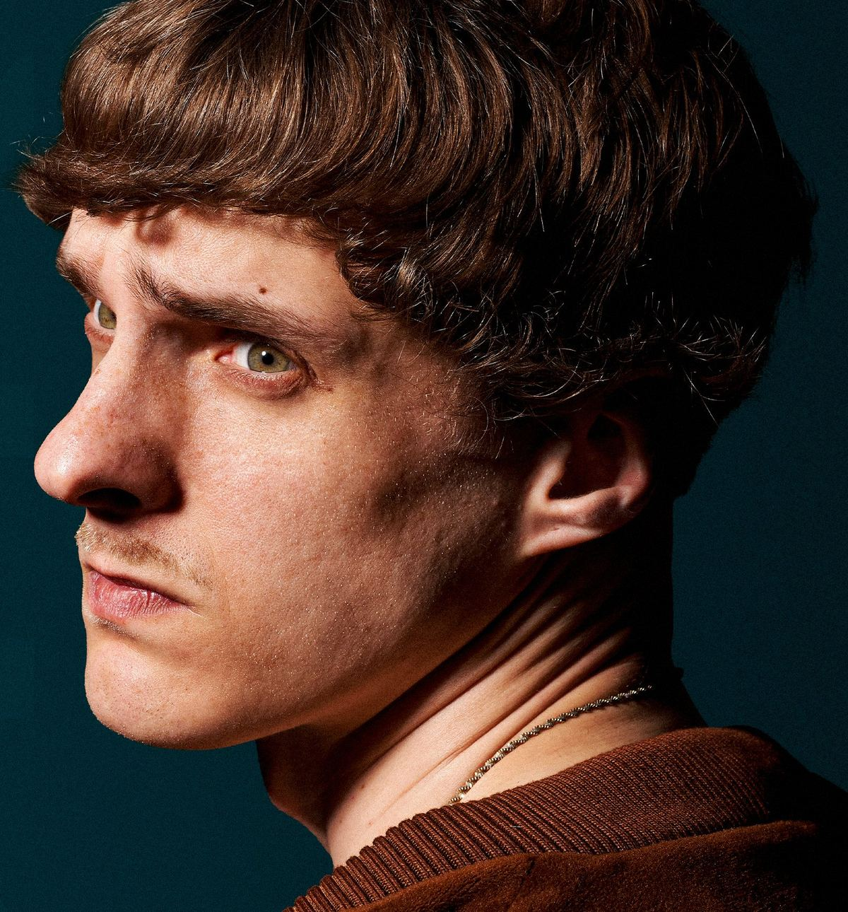
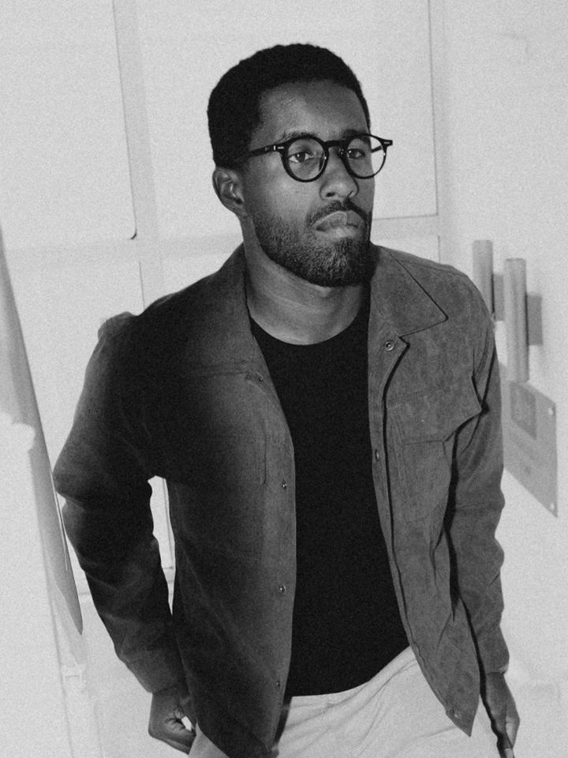
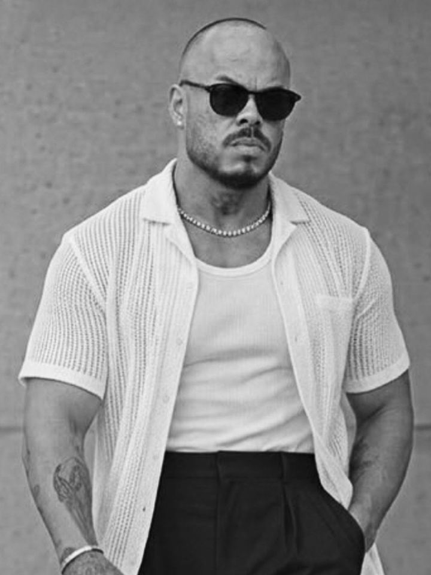

Serviço principal
Consultoria de Visagismo
Análise da anatomia facial, formato de rosto, terços faciais, tom de pele e objetivos de posicionamento.
Mapeamos quem você é e elaboramos o corte perfeito.

Barbearia de alto padrão e visagismo · Santos
Conheça a CINC: sua experiência em barbearia de alto padrão e visagismo em Santos.
Reunimos precisão técnica, olhar estratégico e experiência de atendimento em um ambiente exclusivo, tudo para entregar um corte que transmita a imagem que você deseja.
Descubra como um visual projetado de acordo com a sua anatomia pode destravar sua verdadeira autoridade.
A maioria das barbearias tradicionais ainda opera no modelo industrial:
E profissionais que simplesmente repetem o “corte da moda” em rostos completamente diferentes.
Os cortes da moda em 2026
Nenhum deles foi pensado para o seu rosto.

Substituímos os cortes da moda por visagismo de qualidade. Aqui, nenhum fio de cabelo ou linha de barba é cortado por acaso.
Cada traço é planejado para valorizar os pontos fortes da sua fisionomia e transmitir exatamente a mensagem que você deseja.
Conheça as soluções criadas para o homem exigente.
Análise da anatomia facial, formato de rosto, terços faciais, tom de pele e objetivos de posicionamento.
Mapeamos quem você é e elaboramos o corte perfeito.
A tradução prática da sua consultoria.
Executado com precisão na tesoura e máquina, harmonizamos ângulos, volumes e caimento ideal para o seu dia a dia.
Manutenção e alinhamento do visual para quem já encontrou seu estilo.
Pontualidade, acabamento impecável e respeito rigoroso ao caimento natural dos fios.
Alinhamento simétrico com navalha e toalha quente.
Desenhamos a sua barba como uma moldura do rosto para marcar o maxilar, suavizar o queixo e harmonizar as proporções.
Limpeza e harmonização discreta das linhas superiores.
Sem alterar a essência masculina, abrimos o olhar e eliminamos o peso ou a fisionomia de cansaço.
Técnicas sutis de cobertura e tonalização de fios brancos.
Pigmentação natural para rejuvenescer a imagem em minutos, sem o aspecto artificial de tinturas comuns.
Uma experiência completa e privativa para o noivo e seus padrinhos.
Massagem, rituais estéticos, bebidas premium e o ambiente perfeito para fotos memoráveis antes do “sim”.
Agenda mensal garantida, para o homem que não perde tempo.
Horários fixos priorizados ao longo do ano inteiro, com atendimento preferencial e acompanhamento contínuo da sua imagem.
Não sabe por onde começar? Comece pela consultoria.
Agendar meu atendimentoQuem somos
A CINC é o resultado da visão complementar da Graziela, do Bruno e do Vinicius, três mentes apaixonadas por alto padrão de atendimento, gestão e experiência do cliente.
Observando a cidade de Santos, eles perceberam uma lacuna evidente: faltava um espaço que tratasse a estética masculina com o rigor técnico de uma consultoria de negócios e a sofisticação de um clube privativo.
Decidiram, então, construir a CINC sobre pilares inegociáveis:
Do primeiro contato na recepção ao café servido na temperatura exata, passando pela higienização hospitalar das ferramentas, o serviço em si e o pós-venda.
Aqui, você é um amigo com nome, histórico e preferências respeitadas. Queremos construir uma relação duradoura de cuidado.
Monitoramos constantemente a satisfação dos nossos clientes para garantir que a sua próxima visita seja sempre melhor que a anterior.
A CINC nasce com o compromisso de se tornar a referência máxima em atendimento exclusivo e visagismo em Santos.
O mesmo padrão CINC em cada cadeira, com qualquer profissional da casa.
Bruno Caldas
Barbeiro visagista
[Mini bio e atribuições]
@brunocaldasoficial
Higor Claudino
Barbeiro visagista
[Mini bio e atribuições]
@higorclaudiinoNorton Ferreira
Barbeiro visagista
[Mini bio e atribuições]
@nortonn.ferreira
Juan Bamonde
Barbeiro visagista
[Mini bio e atribuições]
@juan.bamondePedro Barros
Barbeiro visagista
[Mini bio e atribuições]
@pedrovisageA forma como você se apresenta ao mundo dita as portas que se abrem, as reuniões das quais participa, os contratos que você fecha e o respeito que você impõe.
A CINC está aqui para ajudá-lo a encontrar a sua melhor versão para transitar em ambientes desafiadores. Onde muitos verão uma nova pessoa, você terá a certeza de que está com o corte adequado.
Eleve o seu padrão.
Seja bem-vindo à CINC.